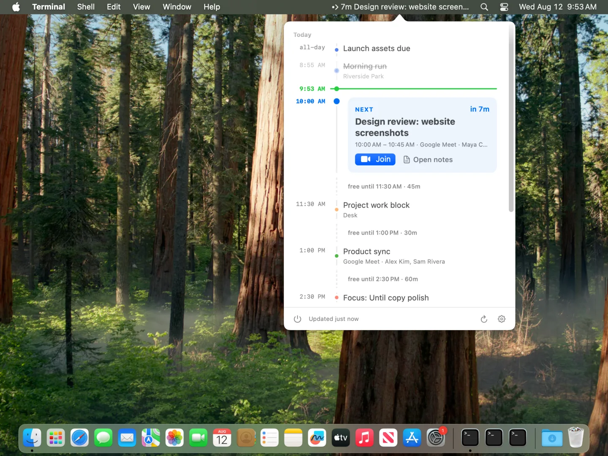

Countdown
Your next event stays in the menubar all day with a live countdown, then shows the time left once the meeting starts.
Google Calendar in your macOS menubar, with join links, notes, reminders, and filters close at hand.

Until keeps the next thing visible, reminds you before it starts, and puts the links you need one click away.
Your next event stays in the menubar all day with a live countdown, then shows the time left once the meeting starts.

A native reminder arrives before the call. Click it to join — or hold it to open the event or snooze for five minutes.
One click creates a Google Doc from your template, shares it with attendees, and attaches it to the event.
Hide low-signal calendars, all-day holds, and events that do not need your attention.
Option-click the icon to join the meeting it's showing, right-click to collapse it to just the icon, set a global shortcut to flip the popover open, and launch at login.
Until runs entirely on your Mac and talks straight to Google. No account with us, no middle server, nothing to collect.
drive.file scope, so it can only see the notes and folders it created — never the rest of your Drive.
Until stays in the menubar, keeps the next meeting close, and leaves the rest of your calendar out of the way.
Fully localized — English / 日本語.